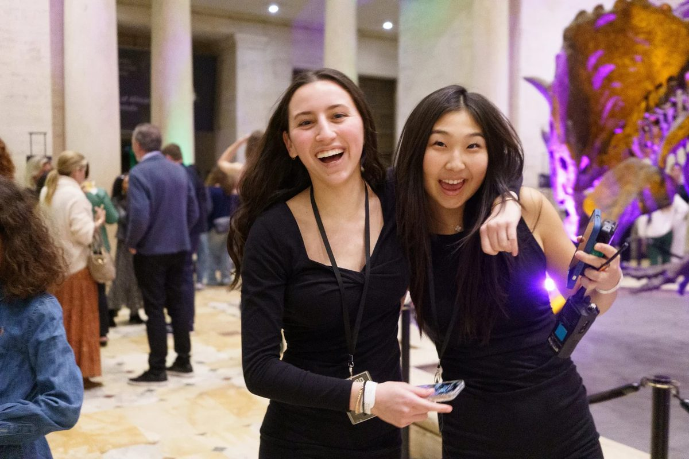
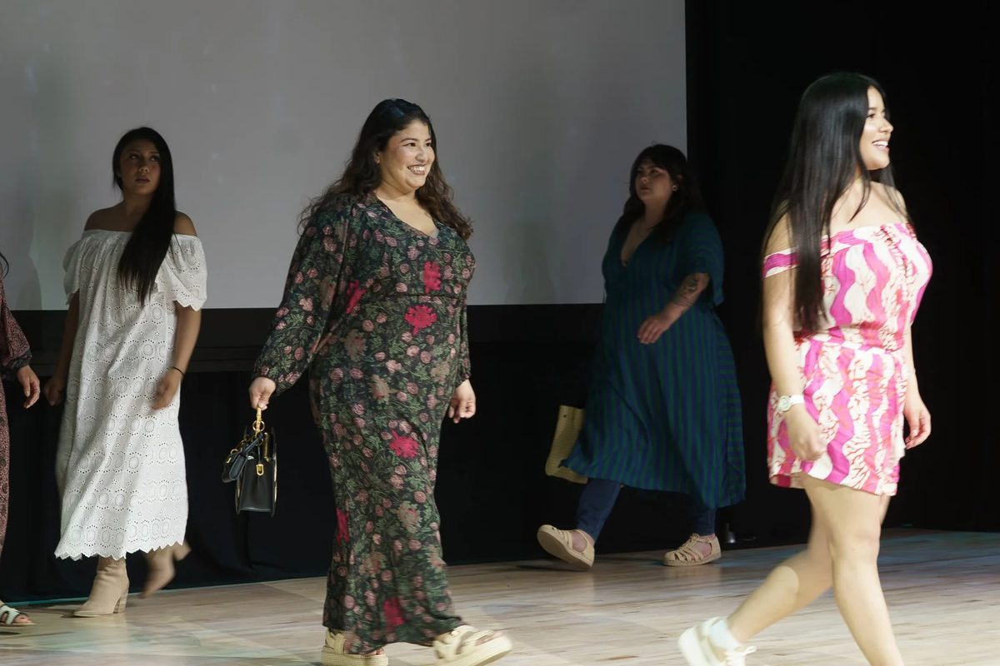
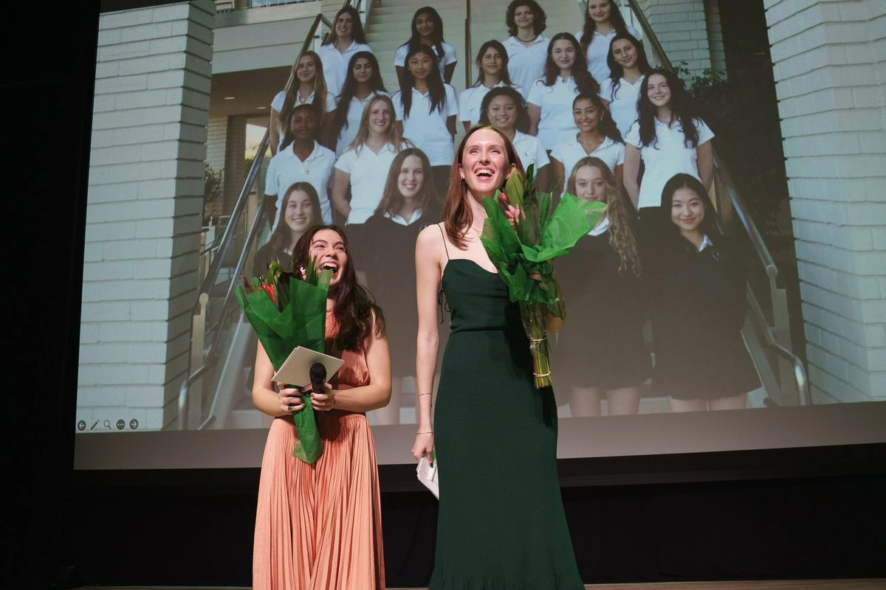
Hear Me Roar (2025)
Hear Me Roar was an unforgettable night dedicated to inspiring every individual to find their voice and speak up on the issues that matter most. The Natural History Museum of Los Angeles provided the perfect backdrop for an evening of art, energy, and purpose, beginning with a silent auction and visual art showcase in the grand foyer and a performance by the DRUM COMPANY. Co-chairs Jade and Channing introduced the board and our mission, and grant recipients took the runway in makeup, fashion, and accessories donated by Tower 28, Natalie Martin, and Steve Madden. Ana Hernandez, a graduate of the New Village Girls Academy, shared a powerful story that reminded us why we do this work, and student art, fashion, and film were showcased in front of our panel of celebrity judges. Thanks to our community, we can continue investing in underserved women and girls and amplifying voices that deserve to be heard.
Guest Judges: Ever Carradine (actress, The Handmaid's Tale, Will & Grace, The Requiem Boogie), Sarah Rafferty (actress, Suits, My Life With The Walter Boys), Alan Silfen (photographer), and Valerie Weiss (director, Outer Banks, Scandal).
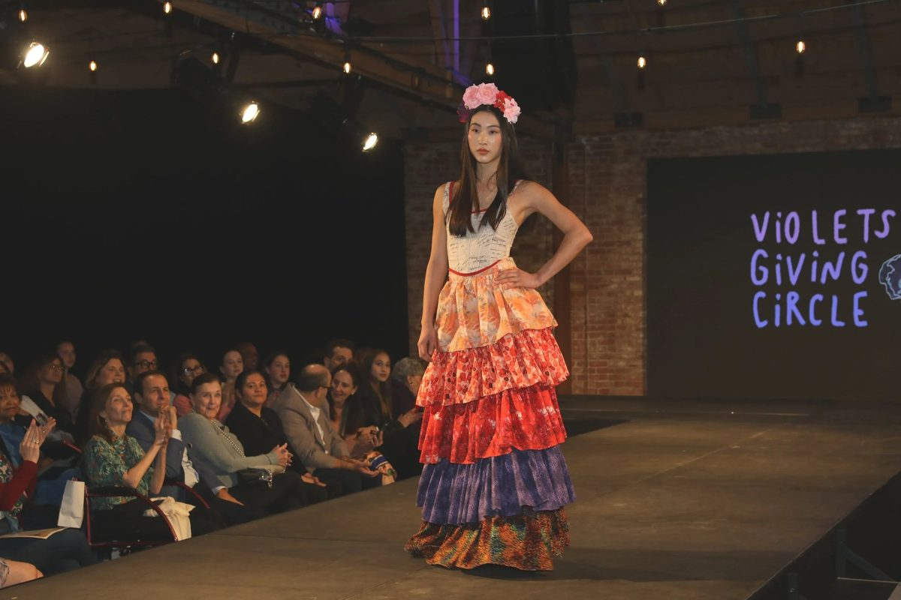
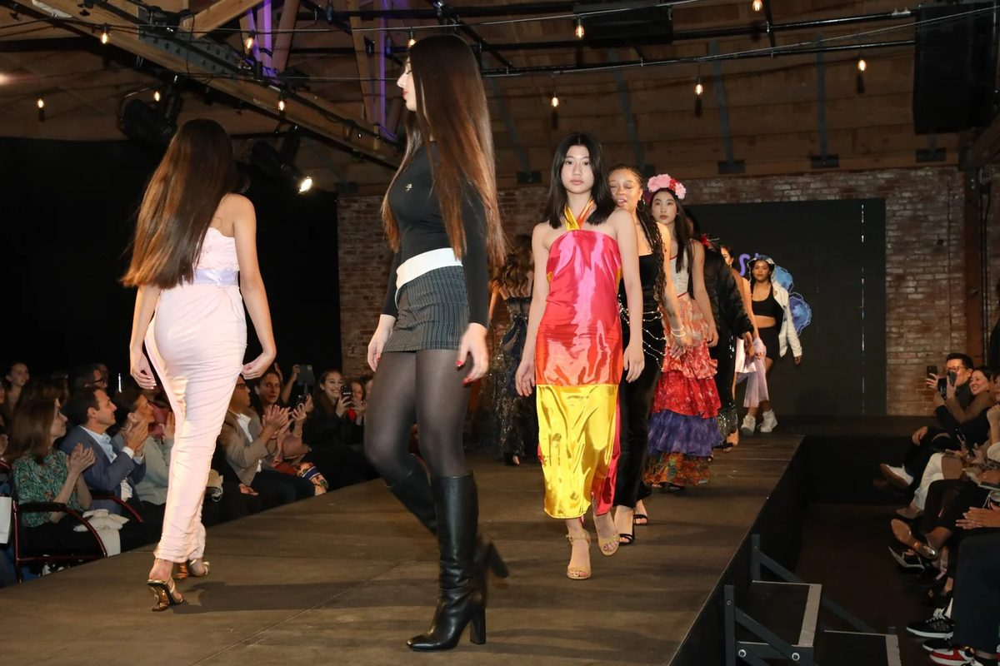
Self Portrait (2023)
Our Self Portrait: Frame Your Story event marked VGC's return to the in-person stage, and it did not disappoint. Raising a record $60,000, the event displayed the overwhelming creativity and passion of Marlborough's artistic community. LA River Studio served as the perfect backdrop to showcase the film, fashion, and 2d media. The excitement was palpable as the models, folklorico dancers, and grant partners graced the stage over the course of the evening. Everyone, both in the audience and on stage, contributed to making the return of the in-person VGC event a night to remember.
Guest Judges: Attica Locke (author, writer, producer for Paramount, Disney, and HBO), Ellen Pompeo (Emmy Award-winning actress in Grey's Anatomy, Catch Me If You Can, Old School), and Mika Yoshitake (independent curator at the Guggenheim and Museum of Contemporary Art, Los Angeles).
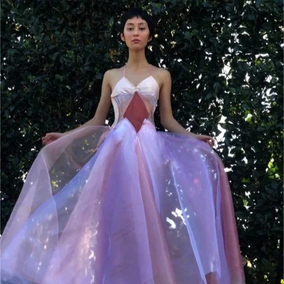
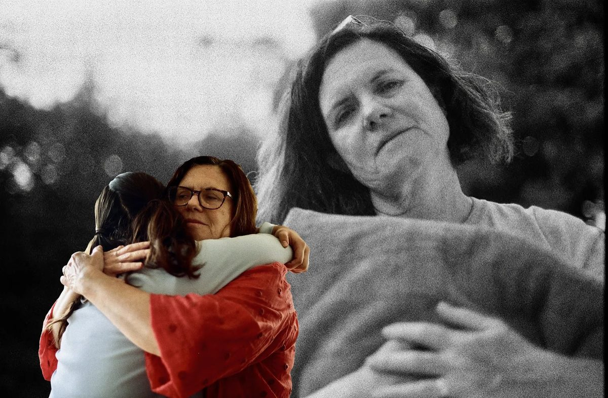
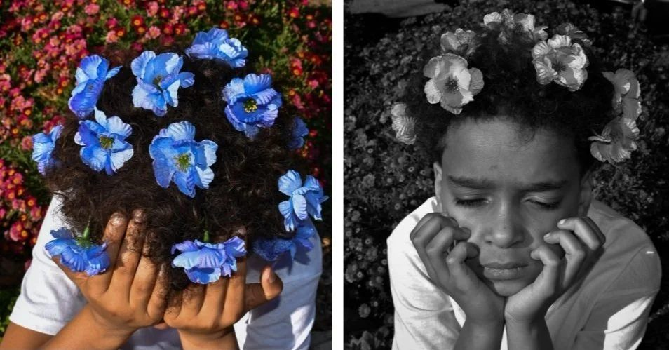
Spring in Full Bloom (2021)
We were only 6 weeks into the pandemic when the board of Violets' Giving Circle chose this theme. We were drawn to the optimism exclusively felt in Spring, a time marked by light after a significant period of darkness.
Our 2021 event was during a year when we fought two simultaneous pandemics, one dominated by staggering loss and chaos and the other pandemic marked by our society's reckoning with inequality. Although this event looked different from past ones, planned entirely on Zoom, it was also our first year including film and photography!
We hosted it in an old-fashioned drive-in movie theater, socially distanced and masked, as a reminder that regardless of our physically-distanced locations, our need to be there for people remains the same.
Guest Judges: Jennifer Garner (actress from 13 Going on 30, Alias, Dallas Buyers Club), Cass Bird (artist, director, and photographer featured in The New York Times Magazine, Rolling Stone), and Mia Locks (senior curator at the Museum of Contemporary Art in Los Angeles).
Rebels With a Cause (2019)
March 10, 2019 marked the momentous culmination of social justice initiatives, street style fashion, unadulterated creativity, and empowerment for everyone involved with the Rebels With A Cause fashion show. Street style fashion - bold, unapologetic styles and designs inspired by urban fashion from around the world - provided inspiration to student designers who created show-stopping, runway worthy looks. The event included musical performances, silent and live auctions, and wonderful food vendors from all across Los Angeles to make the show so captivating and memorable.
Guest Judges: Alison Edmond (executive creative and fashion director, Creator of C Magazine), Lauren Elizabeth (influencer, actress, and founder and creator of The Lauren Elizabeth collection), and Sam Saboura (celebrity stylist, author, editor and host of TLC).
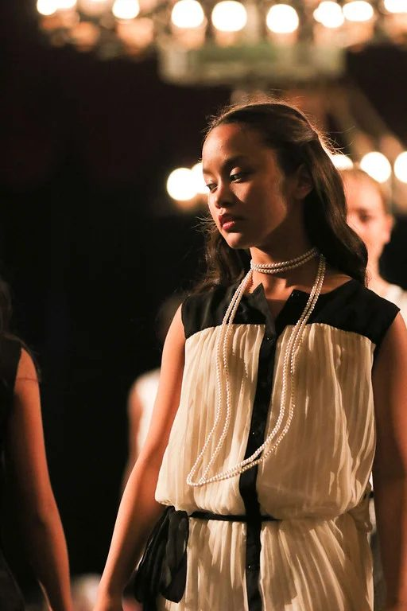
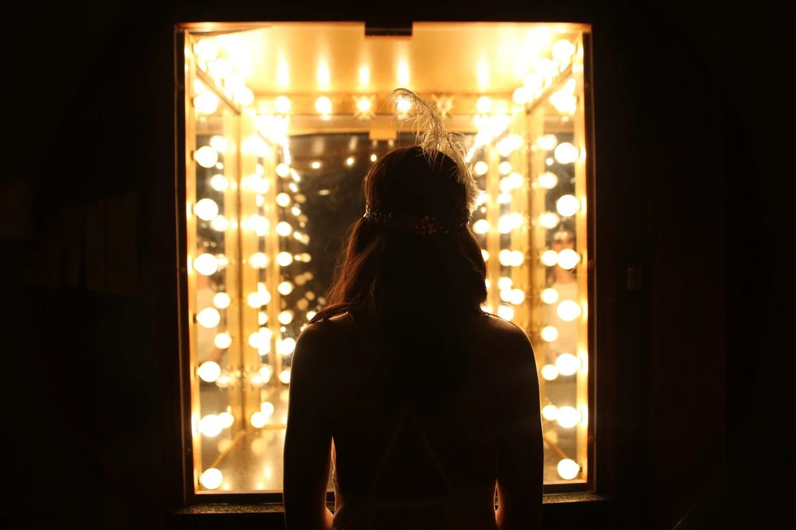
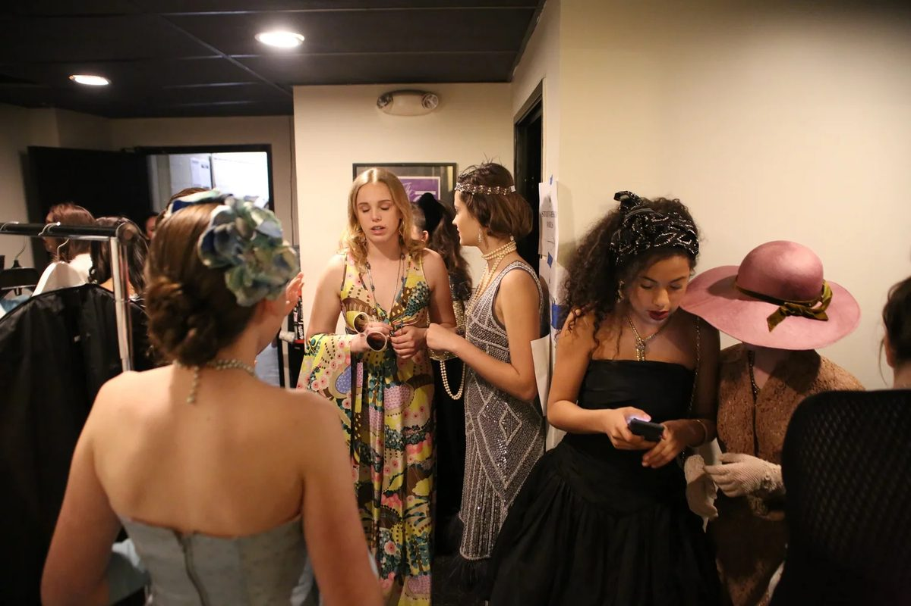
Iconic American Women through the Decades (2017)
The evening of March 19th celebrated the accomplishments of women past and present. American female icons provided inspiration to the student designers who executed their visions through creating looks to walk the runway. The event included musical performances, silent and live auctions, a boutique of Los Angeles vendors, and a fashion show showcasing designs inspired by American women of the 20th century.
Guest Judges: Gina Rodriguez (Golden Globe winning actress from Jane the Virgin), Tamara Mellon (co-founder of Jimmy Choo and CEO of her own label), and Erin Foster (comedy writer and actress of VH1's Barely Famous).
Paris Spring Summer Fashion Week (2015)
On March 1st 2015, Violets' Giving Circle hosted a fashion show at the Ebell on Wilshire inspired by Paris Spring/Summer Fashion Week 2015. Girls from Marlborough as well as guest designers contributed to a fun night filled with a silent and live auction, entertainment from musicians Gwen Snyder (from the class on 2016), Josiah Hawley, and Ryan Beatty.
Guest Judges: Adrienne Bailon (talk show host for The Real and former Disney Cheetah Girl), Lawrence Zarian (lifestyle and fashion expert), and Ethan Peck (actor from 10 Things I Hate About You and Gossip Girl).